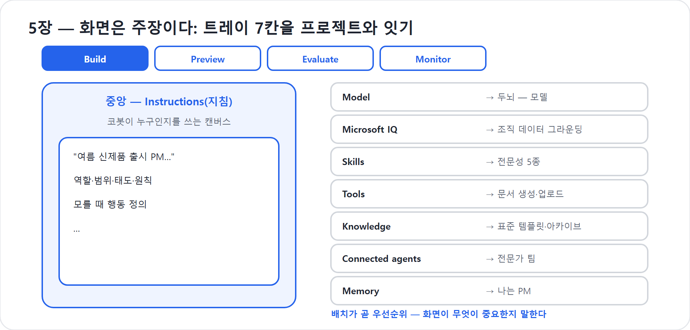

5장. 화면은 주장이다 — 신버전 지도 읽기
처음 Copilot Studio의 작성 화면을 열면 누구나 잠시 멈칫한다. 그러나 이 화면은 기능의 나열이 아니다. 무엇을 가운데 크게 두고 무엇을 옆으로 미는지가 곧 '무엇이 중요한가'에 대한 주장이다.
이 장에서는 그 지도를 읽는 법을 익힌다. 1부의 마지막 장인 만큼, 화면을 단순한 UI 설명으로 보지 말고 이 책 전체의 목차로 읽어보자. Copilot Studio 새 경험의 화면은 “코봇을 어떻게 키워야 하는가”를 이미 말하고 있다.
9개 탭에서 4개 탭으로
신버전의 가장 눈에 띄는 변화는 단순화다. 클래식 경험에서는 토픽, 지식, 액션, 설정 등 여러 영역이 나뉘어 있었고, 메이커는 대화 설계와 구성 항목 사이를 오가야 했다. 공식 Learn의 비교 문서는 클래식이 토픽, 플로, 분기 로직, 명시적 구성 노드 중심이었다고 설명한다. 새 경험은 이 구성을 Build · Preview · Evaluate · Monitor 네 탭으로 정리한다.
이 네 탭은 단순한 메뉴가 아니다. 라이프사이클이다.
| 탭 | 화면이 묻는 질문 | 책의 대응 |
|---|---|---|
| Build | 코봇은 누구이며, 무엇을 알고, 무엇을 할 수 있는가 | 2부·3부 |
| Preview | 지금 만든 코봇이 실제 대화에서 어떻게 움직이는가 | 5부 16~17장 |
| Evaluate | 품질을 반복적으로 측정할 수 있는가 | 5부 18장 |
| Monitor | 내보낸 뒤 무엇을 했고 어디서 흔들렸는가 | 6부 20장 |
화면을 왼쪽에서 오른쪽으로 읽으면 그대로 “만든다 → 다듬는다 → 내보낸 뒤 관찰한다”가 된다. 신버전은 만들기와 운영을 분리하지 않는다. 처음부터 테스트와 평가와 모니터링을 같은 상단 탭에 올려놓는다. 에이전트는 만들어 끝나는 것이 아니라 키우는 것이다.
코봇 한마디
"상단 탭은 제 성장 일지예요. Build에서 저를 만들고, Preview와 Evaluate로 다듬고, Monitor로 실제 일을 보며 계속 키우는 흐름입니다!"
중앙에 놓인 것은 글이다
Build 화면의 중심에는 코드 캔버스도, 노드를 잇는 흐름도도 아니다. Instructions, 곧 지침을 적는 글의 자리가 놓인다. 화면의 심장이 글이라는 사실 자체가 가장 큰 메시지다. 4장에서 말한 '지침이 곧 실력'이라는 명제를 화면이 몸으로 증명하고 있는 셈이다. 코봇을 만드는 일의 중심에는 그리기가 아니라 쓰기가 있다.
이 중앙의 글은 단순한 소개 문구가 아니다. 코봇의 정체성, 말투, 범위, 행동 규칙이 담기는 자리다. “너는 프로젝트 운영을 돕는 코봇이다”, “빠진 정보가 있으면 추측하지 말고 묻는다”, “금액은 원화로 표기한다”, “승인·발송은 사용자의 확인이나 Workflow를 거친다” 같은 원칙이 이곳에서 시작된다. 코봇의 인격과 업무 태도가 이 글에서 만들어진다.
Build 안의 components(Build 탭 능력 조각: 모델·지식·도구), 능력의 선반
Build 탭은 지침만 담는 곳이 아니다. 공식 Learn은 새 경험의 핵심 구성요소를 Instructions, Knowledge, Tools and skills, Model, Connected agents로 정리한다. 화면에서는 이 요소들이 하나의 작성 표면(화면 영역을 가리키는 UI 번역어)에 모인다. 흩어진 설정 메뉴가 아니라, 코봇에게 붙이는 능력의 선반이다.
이 책에서는 그 선반을 다음 비유로 읽는다.
| Build 구성요소 | 비유 | 역할 | 자세히 다루는 곳 |
|---|---|---|---|
| Instructions | 행동매뉴얼 | 정체성·범위·공통 규칙 | 8장 |
| Model | 두뇌 | 추론 품질과 응답 성향 | 7장 |
| Knowledge | 교과서 | 데이터 소스, Microsoft IQ, 기억을 통한 맥락 | 10장 |
| Tools and skills | 손발과 모자 | Tool은 행동, Skill은 재사용 업무 매뉴얼 | 9장·11장 |
| Connected agents | 동료 전문가 | 다른 에이전트에게 전문 작업 위임 | 12장 |
여기서 중요한 점은 모든 능력이 Build 안에 모인다는 사실이다. 과거처럼 “지식은 저 메뉴, 액션은 다른 메뉴, 대화 흐름은 또 다른 캔버스”로 흩어지지 않는다. 코봇을 한 사람의 동료로 보고, 그 동료에게 무엇을 가르치고 무엇을 들려주고 어떤 손발을 붙일지 한 자리에서 조립한다.
우측 트레이, 배치가 곧 우선순위
화면 오른쪽에는 코봇에게 붙일 수 있는 능력들이 위에서 아래로 늘어선 트레이(화면 영역을 가리키는 UI 번역어)가 있다. 실제 UI는 릴리스에 따라 조금씩 바뀔 수 있지만, 2026년 공개 화면에서 보이는 큰 질서는 분명하다. 모델, Microsoft IQ, Skills, Tools, Knowledge, Connected agents, Memory 같은 항목이 하나의 능력 트레이로 모인다. 이 줄세움은 우연이 아니다.
가장 먼저 코봇의 두뇌인 모델을 정하고, 조직 맥락을 읽는 Microsoft IQ와 지식을 붙이며, 일하는 법(Skills)과 손발(Tools), 동료(Connected agents), 기억(Memory)을 차례로 얹는다는 순서의 주장이다. 사무실에 빗대면, 가운데 놓인 큰 책상(지침)이 주인공이고, 벽면 선반(능력 트레이)에서 그때그때 필요한 도구를 꺼내 책상으로 가져오는 그림이다.
이 배치는 독자에게도 중요한 학습 순서를 준다. 우리는 2부에서 먼저 코봇의 사무실과 정체성을 마련한다. 3부에서 Skill, 지식과 기억, 도구, 연결된 에이전트를 붙인다. 그리고 4부에서 플로봇을 엮어 자동화를 완성한다. 화면의 선반이 곧 책의 진도표가 된다.
함정
트레이에 보이는 모든 항목을 처음부터 다 켜야 하는 것은 아니다. 신입 첫날에 회사의 모든 시스템 권한을 주지 않는 것과 같다. 처음에는 지침과 기본 지식, 작은 Skill 몇 개로 시작하고, 필요가 확인될 때 도구·기억·연결된 에이전트를 붙인다.
Preview는 대화창이 아니라 관찰실이다
상단 탭의 두 번째는 Preview다. 이름만 보면 단순 미리보기처럼 들리지만, 새 경험의 Preview는 코봇을 관찰하는 실험실에 가깝다. 공개 데모에서는 메이커가 최종 사용자 보기와 개발자 관점 보기를 오가며, 코봇이 어떤 Skill을 불렀고 어떤 도구를 사용했으며 어떤 과정을 거쳤는지 확인하는 장면이 소개되었다.
코봇이 틀렸을 때 “AI가 이상하다”고 말하고 끝내지 않기 위해서다. 지침이 모호했는지, Skill description이 흐렸는지, 지식이 부족했는지, 도구 호출이 실패했는지 구분해야 고칠 수 있다. 이 관찰법은 16장과 17장에서 본격적으로 다룬다.
Evaluate는 감이 아니라 품질이다
세 번째 탭 Evaluate는 신버전의 철학을 더 선명하게 보여준다. 에이전트 품질을 “한두 번 물어보니 괜찮더라”로 판단하지 말라는 뜻이다. 공식 Learn은 Evaluate 탭에서 테스트 세트를 만들고 실행해 에이전트 품질을 측정한다고 설명한다. 공개 데모에서도 빠른 대화 세트를 만들거나 CSV·Excel로 테스트 케이스를 준비해 평가하는 흐름이 소개되었다.
입문자에게 Evaluate는 다소 낯설 수 있다. 그러나 회사가 쓰는 동료라면 당연한 절차다. 신입사원이 고객에게 나가기 전 모의 응대를 하고, 보고서 양식을 여러 사례로 점검하듯, 코봇도 반복 테스트가 필요하다. 특히 에이전트는 추론하기 때문에 한 번의 성공만으로 충분하지 않다. 다양한 요청, 빠진 정보, 경계 상황, 금지된 요청을 넣어보고 품질을 봐야 한다.
현장에서
“우리 코봇은 잘 됩니다”라는 말보다 강한 증거는 “20개 테스트 중 18개를 통과했고, 실패 2개는 예산 누락 질문과 리스크 우선순위 문제였습니다”라는 기록이다. Evaluate는 감을 기록으로 바꾸는 장치다.
"저를 믿어달라고만 하지 말고 시험해 주세요. 다양한 요청을 넣어 통과와 실패를 기록하면, 감이 아니라 품질로 저를 키울 수 있습니다."
Monitor는 퇴근 후의 CCTV가 아니다
네 번째 탭 Monitor는 내보낸 뒤의 세계다. 공식 Learn은 Monitor에서 최근 작업, 접근한 파일, 활동을 검토한다고 설명한다. 즉 Monitor는 사용자를 감시하는 CCTV가 아니라, 코봇이 실제 업무에서 무엇을 했는지 이해하는 운영 창이다. 어떤 요청이 많았는지, 어떤 파일을 참고했는지, 어떤 도구가 자주 호출됐는지, 어디서 실패했는지를 봐야 다음 개선이 가능하다.
코봇은 배포 순간 완성되는 물건이 아니다. 실제 사용을 만나면서 자란다. 반복 질문은 지식 보강 신호이고, 도구 실패는 권한이나 Workflow 설계 점검 신호이며, 비용 증가는 21장의 거버넌스·비용 논의로 이어진다.
미세한 문구가 말하는 것
화면 곳곳의 작은 문구도 읽을 가치가 있다. “complete work”, “take actions” 같은 표현이 눈에 띈다. 이것은 답하는 봇이 아니라 일하는 동료를 가리키는 단어들이다. 화면은 사용자에게 “질문에 답하는 챗봇을 설정하라”고 말하지 않는다. “일을 끝내는 동료를 작성하고 조립하라”고 말한다. 1장에서 선언한 챗봇의 죽음이, 버튼 옆 한 줄의 문구에까지 스며 있는 셈이다.
'설정'에서 '작성+조립'으로
옛 화면에서 에이전트를 다루는 일은 토픽을 설계하고 노드를 잇는, 다분히 '설정'에 가까운 작업이었다. 신버전의 화면은 그 무게중심을 옮겼다. 가운데서 지침을 쓰고, Build의 components에서 필요한 능력을 꺼내 조립한다. 설정이 아니라 작성과 조립이다.
이 철학을 한 문장으로 줄이면 다음과 같다.
중앙은 글, Build는 능력, 탭은 한살이.
중앙의 글은 코봇의 정체성을 만든다. Build의 능력은 코봇에게 모자와 손발과 교과서를 붙인다. 네 탭은 코봇을 만들고, 시험하고, 평가하고, 운영하는 한살이를 보여준다. 그래서 이 화면 앞에서 길을 잃지 않는 비결은 단순하다. 화면을 기능 목록으로 외우지 말고, 신입사원을 키우는 사무실로 읽으면 된다.
"이 화면은 버튼 모음이 아니라 제 사무실 배치도예요. 중앙의 지침이 제 태도를 만들고, Build의 능력들이 제 모자와 손발과 교과서가 됩니다."
1부의 결론: 화면이 곧 목차다
이 장은 1부의 마지막 장이다. Copilot Studio 새 경험의 화면 자체가 이 책의 구조다. Build가 있으니 2부와 3부에서 코봇을 만들고 가르친다. Workflows가 별도 축으로 있으니 4부에서 플로봇을 붙인다. Preview와 Evaluate가 있으니 5부에서 다듬고, Monitor가 있으니 6부에서 게시·운영·거버넌스와 비용까지 책임진다. 화면의 주장은 분명하다. 챗봇을 설정하지 말고, 일하는 에이전트를 키워라.
핵심 정리
| # | 요점 |
|---|---|
| 1 | 새 경험의 상단 탭은 Build · Preview · Evaluate · Monitor 네 개이며, 이는 에이전트 라이프사이클이다. |
| 2 | 중앙 = Instructions(글). 작성의 캔버스이자 코봇의 행동매뉴얼이다. |
| 3 | Build 안에는 지침, 지식, 도구와 Skill, 모델, 연결된 에이전트가 components로 모인다. |
| 4 | Preview는 단순 대화창이 아니라 코봇의 추론·Skill·도구 사용을 관찰하는 실험실이다. |
| 5 | Evaluate는 감이 아니라 테스트 세트로 품질을 확인하는 장치다. |
| 6 | Monitor는 배포 후 활동을 보고 다음 개선으로 이어가는 운영 창이다. |
| 7 | 이제 '설정'이 아니라 '작성 + 조립 + 운영'이다. 화면 자체가 이 책의 목차다. |
자주 묻는 질문(FAQ)
| 질문 | 답변 |
|---|---|
| 기능이 너무 많아 막막해요. | 다 채울 필요 없다. 2부와 3부에서 하나씩 붙인다. 지금은 중앙=지침, Build=능력, 탭=한살이라는 지도만 익히면 된다. |
| 클래식 화면과 왜 이렇게 다른가요? | 토픽·노드를 설계하던 방식에서, 글로 가르치고 능력을 조립하는 방식으로 철학이 바뀌었기 때문이다. 자세한 비교는 부록 A에서 다룬다. |
| Preview와 Evaluate는 둘 다 테스트 아닌가요? | Preview는 대화하며 즉시 관찰하는 곳이고, Evaluate는 테스트 세트로 품질을 반복 측정하는 곳이다. 각각 16~18장에서 다룬다. |
| Monitor는 게시한 뒤에만 중요한가요? | 게시 후 활동을 보는 탭이지만, 설계할 때부터 Monitor에서 무엇을 확인할지 생각해야 한다. 운영 가능성이 처음부터 달라진다. |
| Build 안의 모든 구성요소를 처음부터 써야 하나요? | 아니다. 지침과 최소 능력으로 시작하고, 필요한 순간 Skill(9장), 지식·기억(10장), 도구(11장), 연결된 에이전트(12장)를 붙인다. |
다음 부에서는
여기까지 우리는 '왜'를 충분히 들었다. 챗봇이 죽고 일하는 봇 둘이 남은 이유(1장), 코봇과 플로봇이라는 두 갈래 길(3장), 진입권이 코딩이 아니라 업무를 또렷이 쓰고 판단하는 능력이라는 사실(4장), 그리고 그 일을 하는 작업대가 무엇을 중요하게 여기는지(5장)까지. 이제 동기는 섰다. 다음은 행동이다.
다음 장부터 우리는 코봇을 입사시킨다. 빈 회사에 신입 한 명을 채용하고, 사무실을 정해주고, 이름을 붙이고, 일하는 법을 가르친다. 2부는 그 입사 첫날부터 시작한다 — 코봇이 누구인지, 그 정체성을 빚는 일이다.
실습 — 코봇 키우기 5단계 (종이 실습): 화면 트레이를 프로젝트와 잇는다

〔이어받기〕 4장의 지침 초안을 들고, 그 지침이 놓일 화면을 미리 읽는다.
4-a. 화면을 연다. Build 화면의 중앙(Instructions=지침)과 우측 능력 트레이 7칸(Model·Microsoft IQ·Skills·Tools·Knowledge·Connected agents·Memory)의 이름을 확인한다. 아직 채우지 않는다.
4-b. 7칸을 프로젝트와 매핑한다. 각 칸에 “이 출시 프로젝트에서 무엇이 들어갈지” 한 줄씩 적는다(예: Skills=전문성 5종, Knowledge=표준 템플릿·아카이브, Tools=문서 생성·업로드, Connected agents=전문가 팀, Memory=“나는 PM”).
4-c. 탭을 책과 잇는다. 상단 4탭(Build·Preview·Evaluate·Monitor)이 이 책의 어느 부와 만나는지 적는다(Build=2–4부, Preview·Evaluate=5부, Monitor=6부).
〔성장〕 “앞으로 코봇에게 무엇이 달릴지”의 전체 지도를 손에 쥔다. 〔검증 포인트〕 7칸 매핑표가 채워지면 통과 — 다음 장부터 이 칸을 실제로 하나씩 켠다.